机器学习算法（一）: 基于逻辑回归的分类预测
逻辑回归的介绍和应用
1.1 逻辑回归的介绍
逻辑回归（Logistic regression，简称LR）虽然其中带有"回归"两个字，但逻辑回归其实是一个分类模型，并且广泛应用于各个领域之中。虽然现在深度学习相对于这些传统方法更为火热，但实则这些传统方法由于其独特的优势依然广泛应用于各个领域中。
而对于逻辑回归而且，最为突出的两点就是其模型简单和模型的可解释性强。
逻辑回归模型的优劣势:
- 优点：实现简单，易于理解和实现；计算代价不高，速度很快，存储资源低；
- 缺点：容易欠拟合，分类精度可能不高
1.2 逻辑回归的应用
逻辑回归模型广泛用于各个领域，包括机器学习，大多数医学领域和社会科学。例如，最初由Boyd 等人开发的创伤和损伤严重度评分（TRISS）被广泛用于预测受伤患者的死亡率，使用逻辑回归 基于观察到的患者特征（年龄，性别，体重指数,各种血液检查的结果等）分析预测发生特定疾病（例如糖尿病，冠心病）的风险。逻辑回归模型也用于预测在给定的过程中，系统或产品的故障的可能性。还用于市场营销应用程序，例如预测客户购买产品或中止订购的倾向等。在经济学中它可以用来预测一个人选择进入劳动力市场的可能性，而商业应用则可以用来预测房主拖欠抵押贷款的可能性。条件随机字段是逻辑回归到顺序数据的扩展，用于自然语言处理。
逻辑回归模型现在同样是很多分类算法的基础组件,比如 分类任务中基于GBDT算法+LR逻辑回归实现的信用卡交易反欺诈，CTR(点击通过率)预估等，其好处在于输出值自然地落在0到1之间，并且有概率意义。模型清晰，有对应的概率学理论基础。它拟合出来的参数就代表了每一个特征(feature)对结果的影响。也是一个理解数据的好工具。但同时由于其本质上是一个线性的分类器，所以不能应对较为复杂的数据情况。很多时候我们也会拿逻辑回归模型去做一些任务尝试的基线（基础水平）。
说了这些逻辑回归的概念和应用，大家应该已经对其有所期待了吧，那么我们现在开始吧！！！
2 学习目标
- 了解 逻辑回归 的理论
- 掌握 逻辑回归 的 sklearn 函数调用使用并将其运用到鸢尾花数据集预测
3 代码流程
Part1 Demo实践
- Step1:库函数导入
- Step2:模型训练
- Step3:模型参数查看
- Step4:数据和模型可视化
- Step5:模型预测
Part2 基于鸢尾花（iris）数据集的逻辑回归分类实践
- Step1:库函数导入
- Step2:数据读取/载入
- Step3:数据信息简单查看
- Step4:可视化描述
- Step5:利用 逻辑回归模型 在二分类上 进行训练和预测
- Step5:利用 逻辑回归模型 在三分类(多分类)上 进行训练和预测
4 算法实战
4.1 Demo实践
Step1:库函数导入
1 | ## 基础函数库 |
Step2:模型训练
1 | ##Demo演示LogisticRegression分类 |
Step3:模型参数查看
1 | ## 查看其对应模型的w |
the weight of Logistic Regression: [[0.73455784 0.69539712]]
the intercept(w0) of Logistic Regression: [-0.13139986]
Step4:数据和模型可视化
1 | ## 可视化构造的数据样本点 |
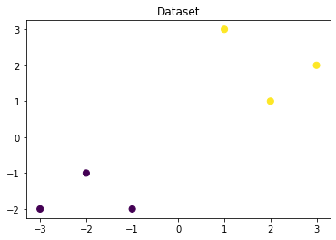
1 | # 可视化决策边界 |
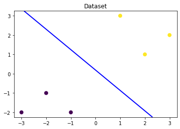
1 | ### 可视化预测新样本 |
c:\users\administrator\appdata\local\programs\python\python37\lib\site-packages\ipykernel_launcher.py:7: MatplotlibDeprecationWarning: The 's' parameter of annotate() has been renamed 'text' since Matplotlib 3.3; support for the old name will be dropped two minor releases later.
import sys
c:\users\administrator\appdata\local\programs\python\python37\lib\site-packages\ipykernel_launcher.py:12: MatplotlibDeprecationWarning: The 's' parameter of annotate() has been renamed 'text' since Matplotlib 3.3; support for the old name will be dropped two minor releases later.
if sys.path[0] == '':
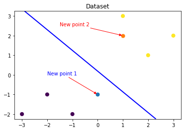
Step5:模型预测
1 | ## 在训练集和测试集上分别利用训练好的模型进行预测 |
The New point 1 predict class:
[0]
The New point 2 predict class:
[1]
The New point 1 predict Probability of each class:
[[0.69567724 0.30432276]]
The New point 2 predict Probability of each class:
[[0.11983936 0.88016064]]
4.2 基于鸢尾花（iris）数据集的逻辑回归分类实践
在实践的最开始，我们首先需要导入一些基础的函数库包括：numpy （Python进行科学计算的基础软件包），pandas（pandas是一种快速，强大，灵活且易于使用的开源数据分析和处理工具），matplotlib和seaborn绘图。
Step1:库函数导入
1 | ## 基础函数库 |
本次我们选择鸢花数据（iris）进行方法的尝试训练，该数据集一共包含5个变量，其中4个特征变量，1个目标分类变量。共有150个样本，目标变量为 花的类别 其都属于鸢尾属下的三个亚属，分别是山鸢尾 (Iris-setosa)，变色鸢尾(Iris-versicolor)和维吉尼亚鸢尾(Iris-virginica)。包含的三种鸢尾花的四个特征，分别是花萼长度(cm)、花萼宽度(cm)、花瓣长度(cm)、花瓣宽度(cm)，这些形态特征在过去被用来识别物种。
| 变量 | 描述 |
|---|---|
| sepal length | 花萼长度(cm) |
| sepal width | 花萼宽度(cm) |
| petal length | 花瓣长度(cm) |
| petal width | 花瓣宽度(cm) |
| target | 鸢尾的三个亚属类别,‘setosa’(0), ‘versicolor’(1), ‘virginica’(2) |
Step2:数据读取/载入
1 | ## 我们利用 sklearn 中自带的 iris 数据作为数据载入， |
Step3:数据信息简单查看
1 | ## 利用.info()查看数据的整体信息 |
<class 'pandas.core.frame.DataFrame'>
RangeIndex: 150 entries, 0 to 149
Data columns (total 4 columns):
# Column Non-Null Count Dtype
--- ------ -------------- -----
0 sepal length (cm) 150 non-null float64
1 sepal width (cm) 150 non-null float64
2 petal length (cm) 150 non-null float64
3 petal width (cm) 150 non-null float64
dtypes: float64(4)
memory usage: 4.8 KB
1 | ## 进行简单的数据查看，我们可以利用 .head() 头部.tail()尾部 |
| sepal length (cm) | sepal width (cm) | petal length (cm) | petal width (cm) | |
|---|---|---|---|---|
| 0 | 5.1 | 3.5 | 1.4 | 0.2 |
| 1 | 4.9 | 3.0 | 1.4 | 0.2 |
| 2 | 4.7 | 3.2 | 1.3 | 0.2 |
| 3 | 4.6 | 3.1 | 1.5 | 0.2 |
| 4 | 5.0 | 3.6 | 1.4 | 0.2 |
1 | iris_features.tail() |
| sepal length (cm) | sepal width (cm) | petal length (cm) | petal width (cm) | |
|---|---|---|---|---|
| 145 | 6.7 | 3.0 | 5.2 | 2.3 |
| 146 | 6.3 | 2.5 | 5.0 | 1.9 |
| 147 | 6.5 | 3.0 | 5.2 | 2.0 |
| 148 | 6.2 | 3.4 | 5.4 | 2.3 |
| 149 | 5.9 | 3.0 | 5.1 | 1.8 |
1 | ## 其对应的类别标签为，其中0，1，2分别代表'setosa', 'versicolor', 'virginica'三种不同花的类别。 |
array([0, 0, 0, 0, 0, 0, 0, 0, 0, 0, 0, 0, 0, 0, 0, 0, 0, 0, 0, 0, 0, 0,
0, 0, 0, 0, 0, 0, 0, 0, 0, 0, 0, 0, 0, 0, 0, 0, 0, 0, 0, 0, 0, 0,
0, 0, 0, 0, 0, 0, 1, 1, 1, 1, 1, 1, 1, 1, 1, 1, 1, 1, 1, 1, 1, 1,
1, 1, 1, 1, 1, 1, 1, 1, 1, 1, 1, 1, 1, 1, 1, 1, 1, 1, 1, 1, 1, 1,
1, 1, 1, 1, 1, 1, 1, 1, 1, 1, 1, 1, 2, 2, 2, 2, 2, 2, 2, 2, 2, 2,
2, 2, 2, 2, 2, 2, 2, 2, 2, 2, 2, 2, 2, 2, 2, 2, 2, 2, 2, 2, 2, 2,
2, 2, 2, 2, 2, 2, 2, 2, 2, 2, 2, 2, 2, 2, 2, 2, 2, 2])
1 | ## 利用value_counts函数查看每个类别数量 |
0 50
1 50
2 50
dtype: int64
1 | ## 对于特征进行一些统计描述 |
| sepal length (cm) | sepal width (cm) | petal length (cm) | petal width (cm) | |
|---|---|---|---|---|
| count | 150.000000 | 150.000000 | 150.000000 | 150.000000 |
| mean | 5.843333 | 3.057333 | 3.758000 | 1.199333 |
| std | 0.828066 | 0.435866 | 1.765298 | 0.762238 |
| min | 4.300000 | 2.000000 | 1.000000 | 0.100000 |
| 25% | 5.100000 | 2.800000 | 1.600000 | 0.300000 |
| 50% | 5.800000 | 3.000000 | 4.350000 | 1.300000 |
| 75% | 6.400000 | 3.300000 | 5.100000 | 1.800000 |
| max | 7.900000 | 4.400000 | 6.900000 | 2.500000 |
从统计描述中我们可以看到不同数值特征的变化范围。
Step4:可视化描述
1 | ## 合并标签和特征信息 |
1 | ## 特征与标签组合的散点可视化 |
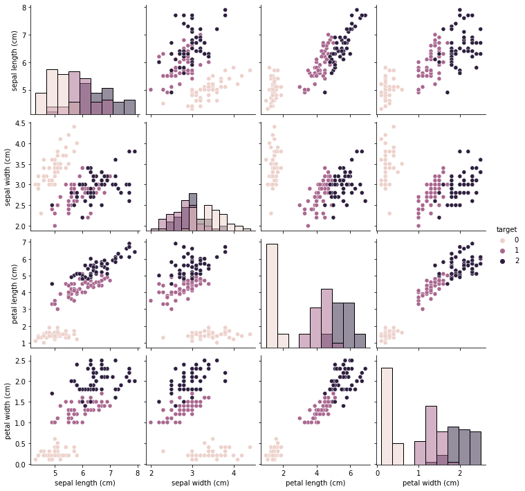
从上图可以发现，在2D情况下不同的特征组合对于不同类别的花的散点分布，以及大概的区分能力。
1 | for col in iris_features.columns: |
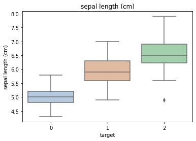
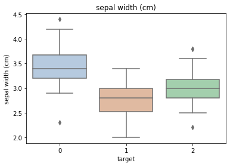
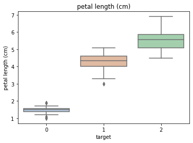
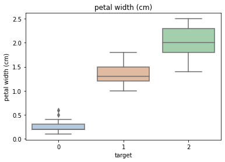
利用箱型图我们也可以得到不同类别在不同特征上的分布差异情况。
1 | # 选取其前三个特征绘制三维散点图 |
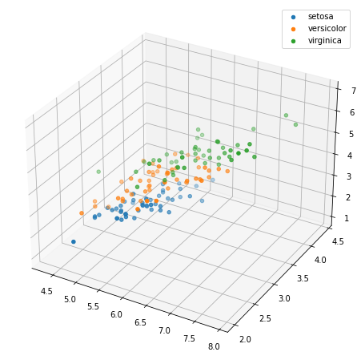
Step5:利用 逻辑回归模型 在二分类上 进行训练和预测
1 | ## 为了正确评估模型性能，将数据划分为训练集和测试集，并在训练集上训练模型，在测试集上验证模型性能。 |
1 | ## 从sklearn中导入逻辑回归模型 |
1 | ## 定义 逻辑回归模型 |
1 | # 在训练集上训练逻辑回归模型 |
LogisticRegression(random_state=0)
1 | ## 查看其对应的w |
the weight of Logistic Regression: [[ 0.45181973 -0.81743611 2.14470304 0.89838607]]
the intercept(w0) of Logistic Regression: [-6.53367714]
1 | ## 在训练集和测试集上分布利用训练好的模型进行预测 |
1 | from sklearn import metrics |
The accuracy of the Logistic Regression is: 1.0
The accuracy of the Logistic Regression is: 1.0
The confusion matrix result:
[[ 9 0]
[ 0 11]]
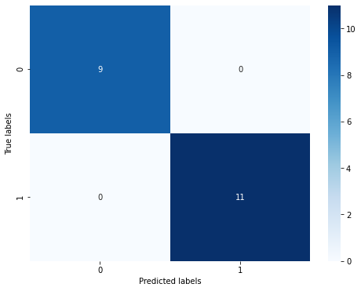
我们可以发现其准确度为1，代表所有的样本都预测正确了。
Step6:利用 逻辑回归模型 在三分类(多分类)上 进行训练和预测
1 | ## 测试集大小为20%， 80%/20%分 |
1 | ## 定义 逻辑回归模型 |
1 | # 在训练集上训练逻辑回归模型 |
LogisticRegression(random_state=0)
1 | ## 查看其对应的w |
the weight of Logistic Regression:
[[-0.45928925 0.83069887 -2.26606531 -0.99743981]
[ 0.33117319 -0.72863424 -0.06841147 -0.9871103 ]
[ 0.12811606 -0.10206464 2.33447678 1.98455011]]
the intercept(w0) of Logistic Regression:
[ 9.4388067 3.93047364 -13.36928034]
1 | ## 在训练集和测试集上分布利用训练好的模型进行预测 |
The test predict Probability of each class:
[[1.03461737e-05 2.33279477e-02 9.76661706e-01]
[9.69926591e-01 3.00732874e-02 1.21677000e-07]
[2.09992549e-02 8.69156616e-01 1.09844129e-01]
[3.61934872e-03 7.91979966e-01 2.04400686e-01]
[7.90943209e-03 8.00605299e-01 1.91485269e-01]
[7.30034956e-04 6.60508053e-01 3.38761912e-01]
[1.68614211e-04 1.86322045e-01 8.13509341e-01]
[1.06915331e-01 8.90815532e-01 2.26913671e-03]
[9.46928071e-01 5.30707288e-02 1.20016060e-06]
[9.62346385e-01 3.76532228e-02 3.91897297e-07]
[1.19533386e-04 1.38823469e-01 8.61056998e-01]
[8.78881880e-03 6.97207359e-01 2.94003822e-01]
[9.73938143e-01 2.60617342e-02 1.22613839e-07]
[1.78434056e-03 4.79518177e-01 5.18697483e-01]
[5.56924345e-04 2.46776840e-01 7.52666235e-01]
[9.83549842e-01 1.64500666e-02 9.13617272e-08]
[1.65201476e-02 9.54672748e-01 2.88071041e-02]
[8.99853722e-03 7.82707575e-01 2.08293888e-01]
[2.98015029e-05 5.45900069e-02 9.45380192e-01]
[9.35695863e-01 6.43039522e-02 1.85301368e-07]
[9.80621190e-01 1.93787398e-02 7.00125265e-08]
[1.68478817e-04 3.30167227e-01 6.69664294e-01]
[3.54046168e-03 4.02267804e-01 5.94191734e-01]
[9.70617284e-01 2.93824735e-02 2.42443971e-07]
[2.56895209e-04 1.54631583e-01 8.45111521e-01]
[3.48668493e-02 9.11966140e-01 5.31670110e-02]
[1.47218849e-02 6.84038113e-01 3.01240002e-01]
[9.46510460e-04 4.28641987e-01 5.70411502e-01]
[9.64848137e-01 3.51516747e-02 1.87917886e-07]
[9.70436779e-01 2.95624021e-02 8.18591621e-07]]
The accuracy of the Logistic Regression is: 0.9833333333333333
The accuracy of the Logistic Regression is: 0.8666666666666667
1 | ## 查看混淆矩阵 |
The confusion matrix result:
[[10 0 0]
[ 0 8 2]
[ 0 2 8]]
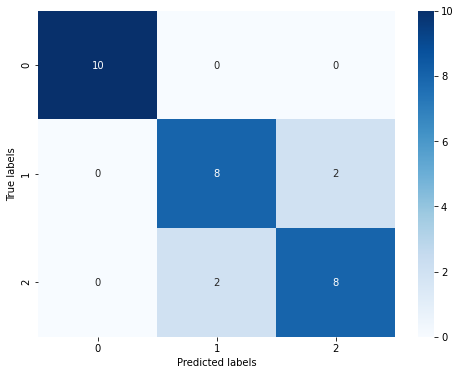
重要知识点
逻辑回归 原理简介：
Logistic回归虽然名字里带“回归”，但是它实际上是一种分类方法，主要用于两分类问题（即输出只有两种，分别代表两个类别），所以利用了Logistic函数（或称为Sigmoid函数），函数形式为：
其对应的函数图像可以表示如下:
1 | import numpy as np |
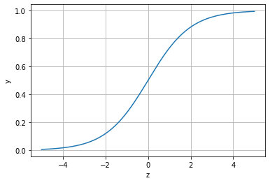
通过上图我们可以发现 Logistic 函数是单调递增函数，并且在z=0的时候取值为0.5，并且 logi(⋅)函数的取值范围为(0,1)。
而回归的基本方程为
将回归方程写入其中为：
所以,,
逻辑回归从其原理上来说，逻辑回归其实是实现了一个决策边界：对于函数,当时，,分类为1，当时，,分类为0，其对应的值我们可以视为类别1的概率预测值.
对于模型的训练而言：实质上来说就是利用数据求解出对应的模型的特定的。从而得到一个针对于当前数据的特征逻辑回归模型。
而对于多分类而言，将多个二分类的逻辑回归组合，即可实现多分类。
END